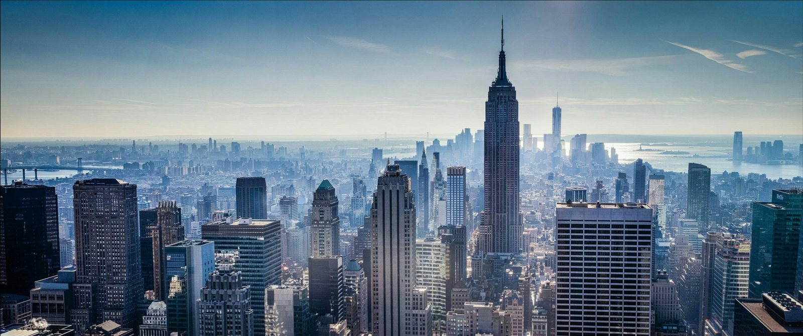
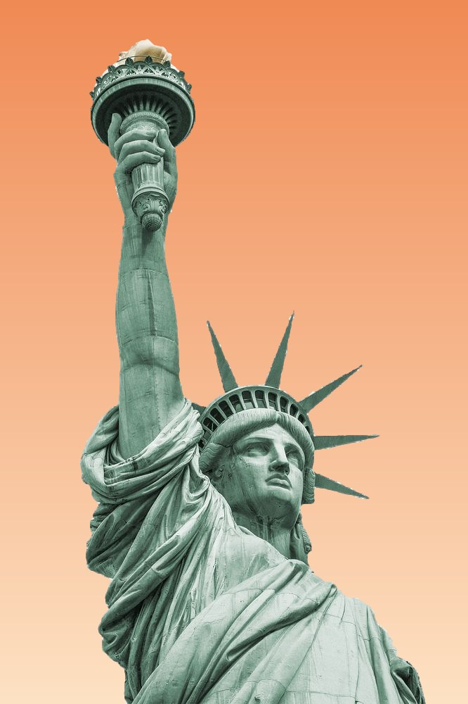

יומן מסע: ניו יורק
התפוח הגדול • מנהטן • ברוקלין • סנטרל פארק • טיימס סקוור

ניו יורק

פסל החירות
ניו יורק
העיר הגדולה בארצות הברית, כ-8 מיליון תושבים מחולקת ל-5 רובעים: מנהטן, ברוקלין, קווינס, הברונקס וסטטן איילנד הכינוי שלה: "התפוח הגדול" האמפייר סטייט בילדינג נפתח ב-1931 פסל החירות היה מתנה מצרפת, ונחנך ב-1886 סנטרל פארק גדול יותר ממדינת מונקו הרכבת התחתית פועלת 24 שעות ביממה מדברים בה מאות שפות שונות